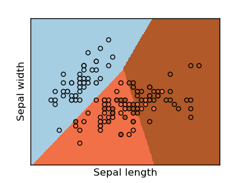

SVM-SVC (Support Vector Classification)¶
The classification application of the SVM is used below. The Iris dataset has been used for this example
The decision boundaries, are shown with all the points in the training-set.
Python source code: plot_svm_iris.py
print __doc__
# Code source: Gael Varoqueux
# Modified for Documentation merge by Jaques Grobler
# License: BSD
import numpy as np
import pylab as pl
from sklearn import svm, datasets
# import some data to play with
iris = datasets.load_iris()
X = iris.data[:, :2] # we only take the first two features.
Y = iris.target
h = .02 # step size in the mesh
clf=svm.SVC(C=20, kernel='linear')
# we create an instance of SVM Classifier and fit the data.
clf.fit(X, Y)
# Plot the decision boundary. For that, we will asign a color to each
# point in the mesh [x_min, m_max]x[y_min, y_max].
x_min, x_max = X[:,0].min() - .5, X[:,0].max() + .5
y_min, y_max = X[:,1].min() - .5, X[:,1].max() + .5
xx, yy = np.meshgrid(np.arange(x_min, x_max, h), np.arange(y_min, y_max, h))
Z = clf.predict(np.c_[xx.ravel(), yy.ravel()])
# Put the result into a color plot
Z = Z.reshape(xx.shape)
pl.figure(1, figsize=(4, 3))
pl.set_cmap(pl.cm.Paired)
pl.pcolormesh(xx, yy, Z)
# Plot also the training points
pl.scatter(X[:,0],X[:,1],c=Y )
pl.xlabel('Sepal length')
pl.ylabel('Sepal width')
pl.xlim(xx.min(), xx.max())
pl.ylim(yy.min(), yy.max())
pl.xticks(())
pl.yticks(())
pl.show()